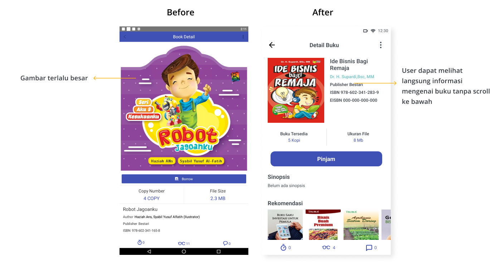

Sitemap
For the sitemap itself, there are no changes or additions.

Disclaimer : This project is not affiliated with or endorsed by iPusnas.
iPusnas is a free digital library application created by the National Library of the Republic of Indonesia. The iPusnas application has several features, such as borrowing books, reading books online and offline, and interacting with fellow users.
When I used the iPusnas application, I experienced several problems.
1. Very confusing registration flow
2. The position of the navigation buttons is difficult to reach, and the card size is not the same.
3. The book image is too large, so the user must scroll down to see the description/book details.
Before concluding the problem and providing solutions to the existing problems, I should do some research first to find out the experiences of other users.
User Research, prototyping, visual design & usability testing
To make it easier to do research, I use design thinking.
To learn about the issues that users are having with the iPusnas app, I looked at the reviews on the Google Play store. The findings of the review show that users have encountered problems:
Usability testing is performed to learn more about the problems that users experience. Five participants did usability testing. The participants' criteria are people aged 18 years and over who understand using smartphones.
There are 3 tasks performed in usability testing :
Because of the huge amount of information collected during usability testing and interviews, an affinity diagram is required to organize and group it. Users confront some issues, including:
Next, create a user persona based on the results of the research. By creating personas, we can empathize more deeply with the goals and problems of using the application.
The next step is to create a user journey based on Budi's user persona. With the user journey, I can understand the user experience when using the application and see opportunities that can be improved from the problems faced by the user.
From the opportunities obtained from the user journey, the next step is to prioritize which opportunities must be done first. I prioritized changes to the registration flow, positioning of navigation buttons and changes to product size. Changing the registration flow is very important because we have to register to borrow a book. If the user cannot register, then he cannot borrow books. While the position of the navigation buttons and the size of the product because the user will often interact with it.
For the sitemap itself, there are no changes or additions.
Next, create a user flow that describes how a user performs a task. There are two user flows: "login/register" and "read a book". The "login & register" flow's registration has changed, however the "read a book" flow has not changed.
Before making a mockup, I made a wireframe to get an idea of how the design would look.
For the colours themselves, I take the colours from the iPusnas application. At the same time, for typography, icons and spacing, use guidelines from material google because iPusnas does not provide guidelines or the type of typography used.

On the registration screen, there is a change where there is an addition to the register button.
On the home screen, there are several changes, where the position of the home button that was previously on the top was moved to the bottom and consistent product size changes.
On the book detail screen, there is a change where the image size is reduced then the position of the book description is on the top right so that the user does not need to scroll.
Usability testing was required to validate the changes I made. Five people took part in the usability testing.
Based on usability testing results, all participants completed the given task.
There are several things that can be learned in revising the iPusnas application